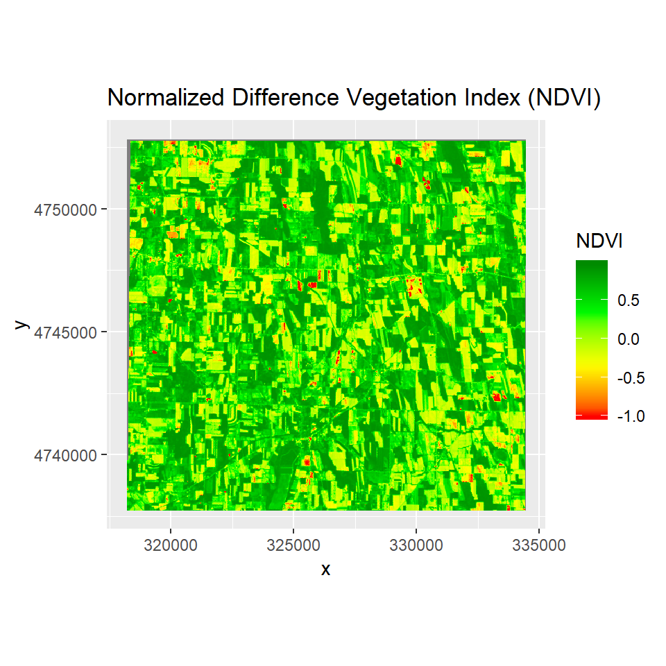
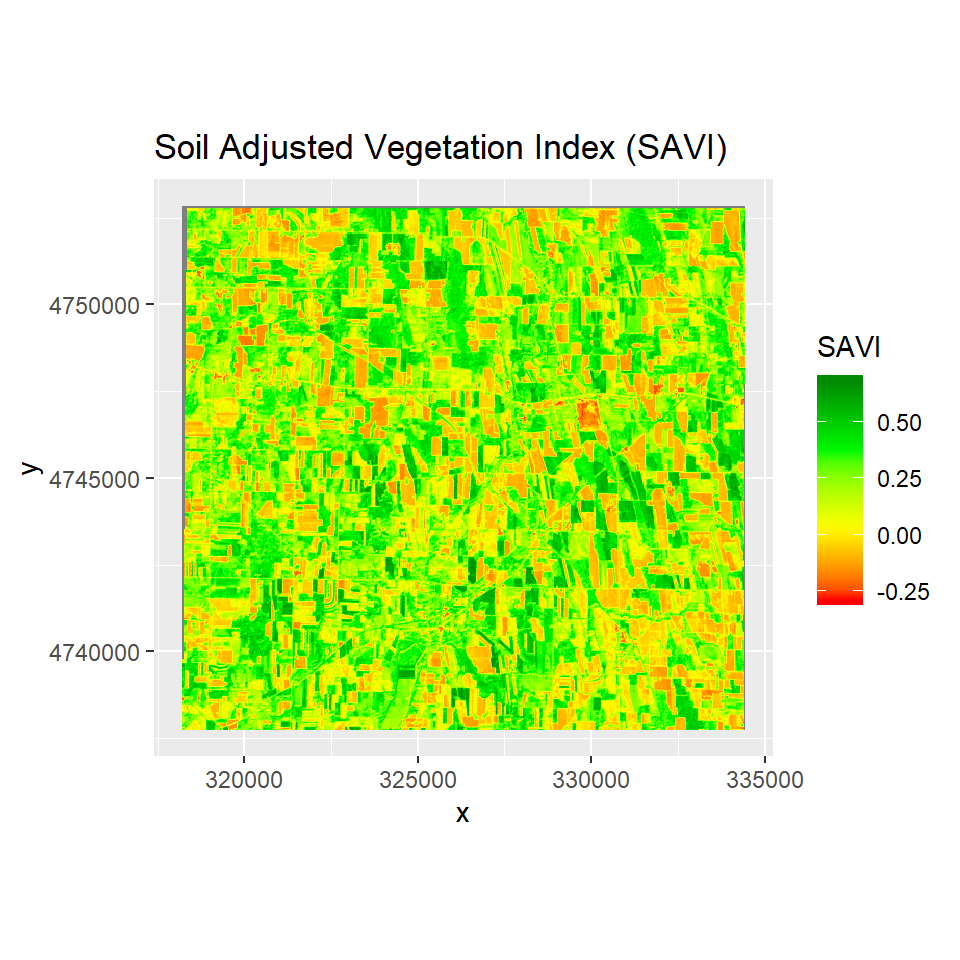
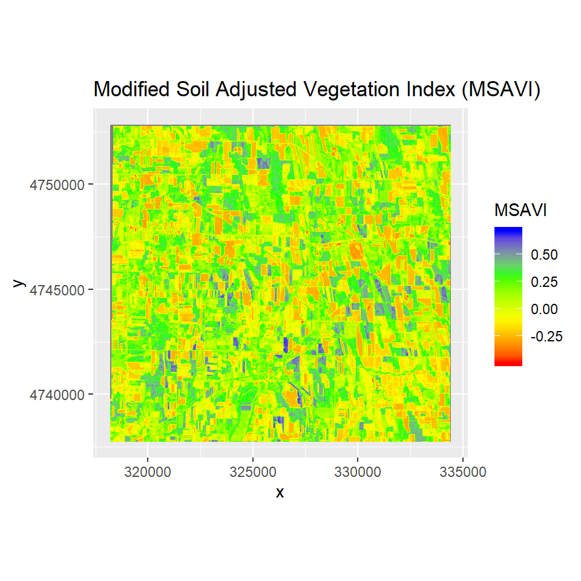
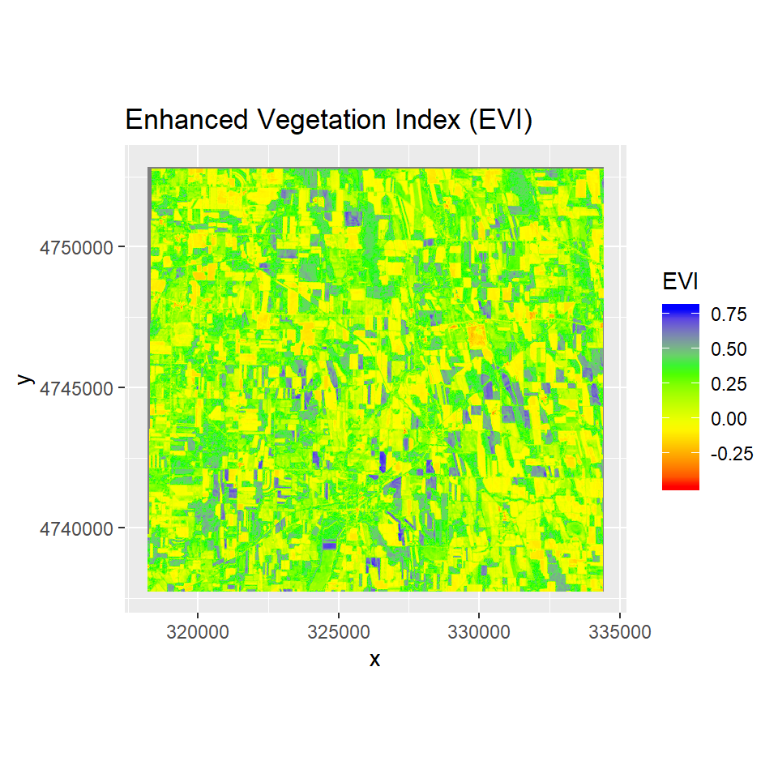
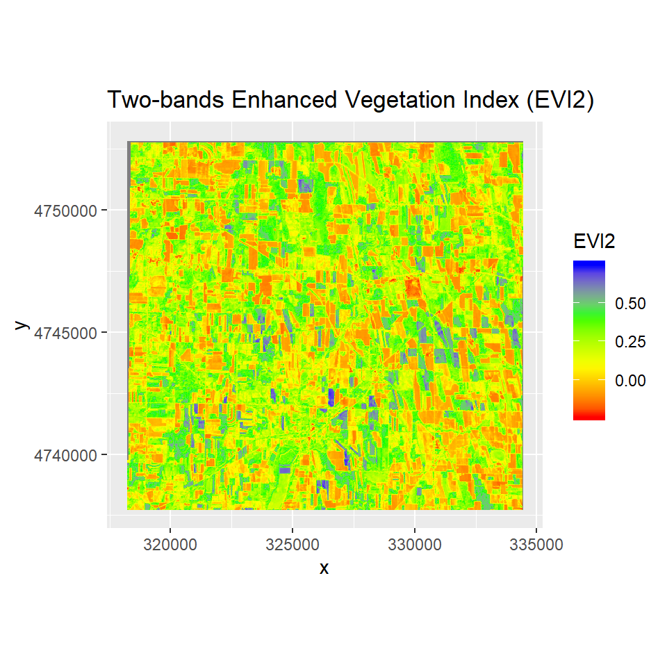
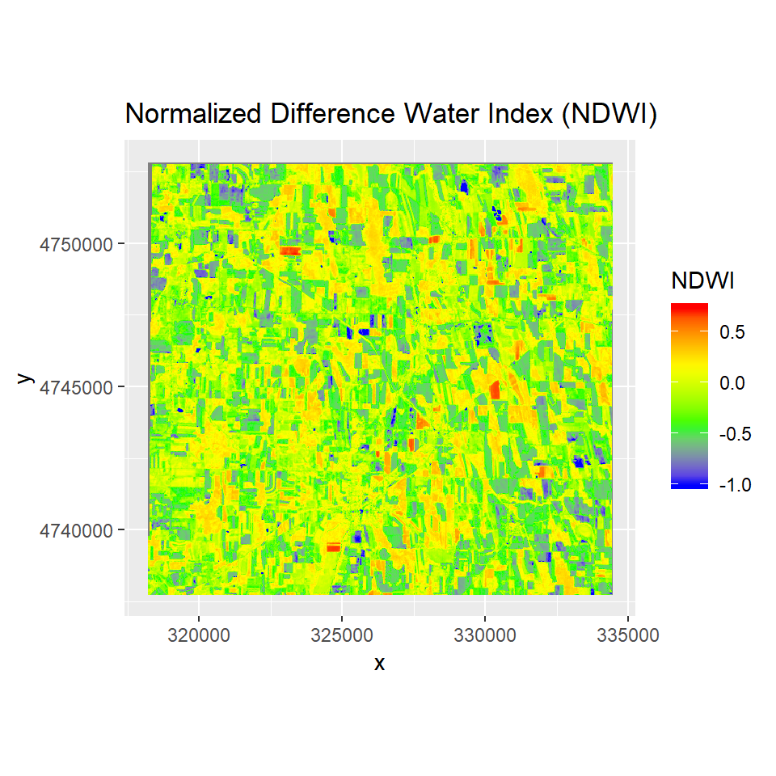

Spectral Indices
In this lesson, we will learn how to calculate different types of spectral indices using R. For this purpose, we will use atmospheric-corrected, Landsat-8 bands that we created in the previous section. We will calculate the following indices:
Load packages
library (raster) # raster data
library(rasterVis) # raster visualisation
library(sp) # Spatial data processing
library(rgdal) # Spatial data processing
library(RStoolbox) # Image analysis
library(ggplot2) # plotingThe data could be available for download from here.
# Define data folder
dataFolder<-"D://Dropbox//Spatial Data Analysis and Processing in R//DATA_09//DATA_09//"We will use blue (b2), red (b4), NIR (b5) and Shortwave Infra-red1 (SWIR1) bands to calculate above mentioned indices.
Load bands
BLUE<- raster(paste0(dataFolder,"//Landsat8//Landsat8_PROCESSED//_B2_sre.tif"))
RED<- raster(paste0(dataFolder,"//Landsat8//Landsat8_PROCESSED//_B4_sre.tif"))
NIR<- raster(paste0(dataFolder,"//Landsat8//Landsat8_PROCESSED//_B5_sre.tif"))
SWIR1<- raster(paste0(dataFolder,"//Landsat8//Landsat8_PROCESSED//_B6_sre.tif"))Normalized Difference Vegetation Index
The Normalized Difference Vegetation Index (NDVI) is an index of plant “greenness” or photosynthetic activity, and is one of the most commonly used vegetation indices. Vegetation indices are based on the observation that different surfaces reflect different types of light differently. Photosynthetically active vegetation, in particular, absorbs most of the red light that hits it, while reflecting much of the near infrared light. Vegetation that is dead or stressed reflects more red light and less near infrared light. The biophysical interpretation of NDVI is the fraction of absorbed photosynthetically active radiation.
NDVI is calculated as:

Clipping
NDVI = (NIR - RED)/(NIR +RED)
ggR(NDVI, geom_raster = TRUE) +
scale_fill_gradientn("NDVI",
colours = c("red", "yellow", "green", "green4"))+
ggtitle("Normalized Difference Vegetation Index (NDVI)")
Soil Adjusted Vegetation Index
This index is similar to NDVI, but it suppresses the effects of pixels containing bare soil, by incorporating a canopy background adjustment factor, L, into the calculations. L is a function of vegetation density, which can be based on prior knowledge of vegetation amounts. In the absence of such knowledge, Huete (1988) suggests using a value of L=0.5 to account for first-order soil background variations. This index is best used in areas with relatively sparse vegetation where soil is visible through the canopy.
** Soil Adjusted Vegetation Inde (SAVI)** is calculated as:

Clipping
L=0.5
SAVI= (1 + L)*(NIR - RED)/(NIR + RED + L)
ggR(SAVI, geom_raster = TRUE) +
scale_fill_gradientn("SAVI", colours = c("red", "yellow", "green", "green4"))+
ggtitle("Soil Adjusted Vegetation Index (SAVI)")
Modified Soil Adjusted Vegetation Index
The modified soil-adjusted vegetation index (MSAVI) addresses some of the limitations of the NDVI when applied to areas with a high degree of exposed soil surface. The problem with the original soil-adjusted vegetation index (SAVI) is that it required specifying the soil-brightness correction factor (L) through trial-and-error based on the amount of vegetation in the study area or using a “one size fits all” correction factor of 0.5 To more reliably and simply calculate a soil brightness correction factor, Qi et al. (1994a) developed MSAVI (Qi et al. 1994b).
MSAVI is calculated as:

Clipping
MSAVI = NIR + 0.5 - (0.5 * sqrt((2 * NIR + 1)^2 - 8 * (NIR - (2 * RED))))
ggR(MSAVI, geom_raster = TRUE) +
scale_fill_gradientn("MSAVI", colours = c("red", "yellow", "green", "blue"))+
ggtitle("Modified Soil Adjusted Vegetation Index (MSAVI)")
Enhanced Vegetation Index
The Enhanced Vegetation Index (EVI) was also developed to address some of the limitations of the NDVI. The EVI was developed for areas with high biomass, which cause a problem for the NDVI. It reduces the influence of atmospheric conditions on vegetation index values, and corrects for canopy background signals. Accordingly, EVI tends to be more sensitive than NDVI to plant canopy differences like leaf area index (LAI), canopy structure, and plant phenology.
EVI is calculated as:
Clipping
# The coefficients adopted in the MODIS-EVI algorithm are;
# C1, C2, and L are coefficients to correct for atmospheric condition
# (i.e., aerosol resistance).
# For the standard MODIS EVI product:
L_evi=1
C1 = 6
C2 = 7.5
G = 2.5
EVI = G * ((NIR - RED)/(NIR + C1 * RED - C2 * BLUE + L_evi))
ggR(EVI, geom_raster = TRUE) +
scale_fill_gradientn("EVI", colours = c("red", "yellow", "green", "blue"))+
ggtitle("Enhanced Vegetation Index (EVI)")
Two bands Enhanced Vegetation Index
A two-band Enhanced Vegetation Index (EVI2) without the blue band reflectance has recently been developed as a proxy for the phenology, quantity, and activity of vegetation . EVI2 has several advantages over NDVI including the ability to resolve LAI differences for vegetation with different background soil reflectance values.
EVI2 is calculated as:
Clipping
G=2.5
EVI2= G * (NIR - RED)/(NIR + 2.4 * RED + 1)
ggR(EVI2, geom_raster = TRUE) +
scale_fill_gradientn("EVI2", colours = c("red", "yellow", "green", "blue"))+
ggtitle("Two-bands Enhanced Vegetation Index (EVI2)")
Normalized Difference Water Index
The NDWI index is designed for water body mapping. A water body has strong absorbability and low radiation in the visible to infrared range of wavelengths. Consequently, the green and Near Infra-red bands from remote sensing images are used in the calculation of the index. The NDWI can usually enhance the detection of water bodies
NDWI is calculated as:

Clipping
NDWI=(NIR - SWIR1)/(NIR + SWIR1)
ggR(NDWI, geom_raster = TRUE) +
scale_fill_gradientn("NDWI",
colours = c("blue", "green", "yellow", "red"))+
ggtitle("Normalized Difference Water Index (NDWI)")